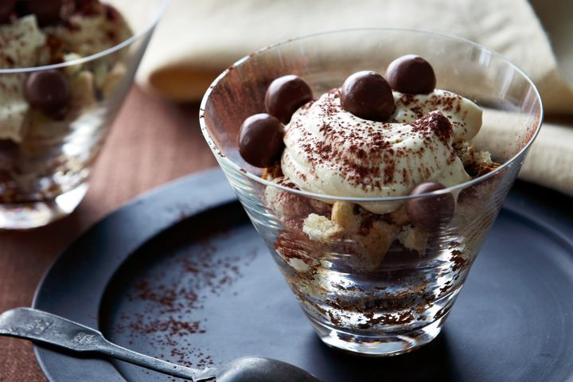

Desserts
Discover our collection of satisfying desserts.
Almond and Date Cake

Ingredients:
- 1 cup dates, pitted and chopped
- 1 cup boiling water
- 1 teaspoon baking soda
- 1/2 cup unsalted butter, softened
- 3/4 cup granulated sugar
- 2 eggs
- 1 teaspoon vanilla extract
- 1 1/2 cups all-purpose flour
- 1 teaspoon baking powder
- 1/2 teaspoon salt
- 1 cup almond meal
- 1/2 cup sliced almonds, for topping (optional)
Instructions:
- Preheat the Oven: Preheat your oven to 350°F (175°C). Grease and flour a 9x5 inch loaf pan.
-
Prepare Dates:
- In a small bowl, combine chopped dates and baking soda. Pour boiling water over the dates and let stand for 5-10 minutes.
-
Cream Butter and Sugar:
- In a large mixing bowl, cream together the softened butter and granulated sugar until light and fluffy.
- Add eggs, one at a time, beating well after each addition. Stir in vanilla extract.
-
Mix Dry Ingredients:
- In a separate bowl, sift together flour, baking powder, and salt. Stir in almond meal.
-
Combine Batter:
- Add the dry ingredients to the creamed mixture alternately with the date mixture, beginning and ending with the dry ingredients. Mix until just combined.
-
Bake the Cake:
- Pour the batter into the prepared loaf pan. Sprinkle sliced almonds over the top, if using.
- Bake in preheated oven for 50-60 minutes, or until a toothpick inserted into the center comes out clean.
-
Cool and Serve:
- Allow the cake to cool in the pan for 10 minutes before transferring to a wire rack to cool completely.
- Slice and serve the almond and date cake as desired. Enjoy!
Tiramisu
Ingredients:
- 1 cup heavy cream
- 1 cup mascarpone cheese
- 1/4 cup powdered sugar
- 1 teaspoon vanilla extract
- 1 cup brewed coffee, cooled
- 2 tablespoons coffee liqueur (optional)
- 1 package ladyfinger cookies
- 1 cup Maltesers (or other malted milk balls), crushed
- 1 tablespoon cocoa powder, for dusting
Instructions:
- In a large mixing bowl, whip the heavy cream until stiff peaks form.
- In another bowl, combine the mascarpone cheese, powdered sugar, and vanilla extract. Mix until smooth.
- Gently fold the whipped cream into the mascarpone mixture until well combined.
- In a shallow dish, combine the brewed coffee and coffee liqueur (if using).
- Quickly dip each ladyfinger into the coffee mixture, ensuring they are soaked but not soggy.
- Arrange a layer of soaked ladyfingers in the bottom of a serving dish.
- Spread half of the mascarpone mixture over the ladyfingers.
- Sprinkle half of the crushed Maltesers over the mascarpone layer.
- Repeat the layers with remaining ladyfingers, mascarpone mixture, and crushed Maltesers.
- Using a fine sieve, dust the top of the tiramisu with cocoa powder.
- Refrigerate the tiramisu for at least 4 hours, or overnight, to allow the flavors to meld and the dessert to set.
- Slice and serve chilled. Enjoy your delicious Maltesers tiramisu!